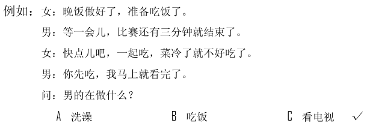
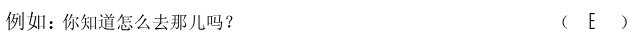
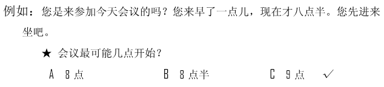

🎧 Phần nghe · Câu 1–40
Bấm phát để bắt đầu nghe. Thời gian làm bài bắt đầu khi bạn nghe hoặc chọn đáp án.
Nghe · Phần 1 · Câu 1–5
Nghe và chọn hình A–F phù hợp.

Nghe · Phần 1 · Câu 6–10
Nghe và chọn hình A–E phù hợp.
Nghe · Phần 2 · Câu 11–20
Nghe và chọn ✓ (đúng) hoặc × (sai).

Câu 11
★他在准备晚饭。
Câu 12
★要认真听老师说的话。
Câu 13
★他已经把书还了。
Câu 14
★他害怕小动物。
Câu 15
★女儿的成绩提高了。
Câu 16
★他长得很高。
Câu 17
★北方和南方的天气不一样。
Câu 18
★他喜欢去公园读书。
Câu 19
★数学是他的爱好。
Câu 20
★手表不像以前那么重要了。
Nghe · Phần 3 · Câu 21–30
Nghe và chọn đáp án A, B hoặc C.

Câu 21
Câu 22
Câu 23
Câu 24
Câu 25
Câu 26
Câu 27
Câu 28
Câu 29
Câu 30
Nghe · Phần 4 · Câu 31–40
Nghe hội thoại và chọn đáp án A, B hoặc C.

Câu 31
Câu 32
Câu 33
Câu 34
Câu 35
Câu 36
Câu 37
Câu 38
Câu 39
Câu 40
Đọc · Phần 1 · Câu 41–45
Chọn câu A–F phù hợp để ghép với từng câu.

Đọc · Phần 1 · Câu 46–50
Chọn câu A–E phù hợp để ghép với từng câu.
Đọc · Phần 2 · Câu 51–55
Chọn từ A–F điền vào chỗ trống.
Đọc · Phần 2 · Câu 56–60
Chọn từ A–F điền vào chỗ trống của hội thoại.

Đọc · Phần 3 · Câu 61–70
Đọc đoạn văn và chọn đáp án đúng.

Câu 61
不同的季节可以用不同的颜色来表示，我们用黄色表示秋季，那夏季呢？
★黄色常被用来表示：
★黄色常被用来表示：
Câu 62
2月14号早上，她正要去上班的时候，突然看到男朋友拿着鲜花站在门口。她这才明白今天是他们的节日。
★根据这段话，可以知道：
★根据这段话，可以知道：
Câu 63
你的菜单里有水果饭吗？你想学着做水果饭吗？其实很简单，把米饭做好后，再把一块儿一块儿新鲜的水果放进去，水果饭就完成了。你可以做苹果饭，香蕉饭，如果你愿意，还可以做西瓜饭。
★水果饭：
★水果饭：
Câu 64
听说你下个星期就要离开北京回国了？我下星期不在北京，没办法去机场送你了，这个小熊猫送给你，欢迎你明年再到中国来。
★他为什么现在送礼物？
★他为什么现在送礼物？
Câu 65
他在我生病的时候照顾过我，在我遇到问题的时候帮助过我，在我心中，他是我最好的朋友。
★我遇到问题时，他：
★我遇到问题时，他：
Câu 66
中国有句老话，叫“有借有还，再借不难”，是说向别人借的东西，用完就要还回去，这样才能让别人相信你，下次还会借给你。
★借了别人的东西：
★借了别人的东西：
Câu 67
这辆车有上下两层，很多人都愿意坐上边那层，因为坐得高，眼睛看得远，一路上经过的地方，你都可以看得更清楚。
★关于这辆车，可以知道：
★关于这辆车，可以知道：
Câu 68
小王上午脸色不太好，同事们以为他病了，问他怎么了，他笑着回答说：“昨晚看球赛，两点才睡觉。”
★小王昨天晚上：
★小王昨天晚上：
Câu 69
没关系，她哭是因为刚才听到一个孩子在唱《月亮船》，这使她突然想起了很多过去的事情。
★她为什么哭？
★她为什么哭？
Câu 70
下班后我们一起去喝茶吧，就在公司旁边，30元一位，除了茶水，还送一些吃的。你那个朋友姓什么？我忘了，把他也叫上？
★那个茶馆儿怎么样？
★那个茶馆儿怎么样？
Viết · Phần 1 · Câu 71–75
Sắp xếp các từ đã cho thành câu hoàn chỉnh.
Phần viết được đối chiếu với đáp án mẫu; bỏ qua khoảng trắng và dấu câu. Điểm hiển thị là điểm luyện tập.

Câu 71
Câu 72
Câu 73
Câu 74
Câu 75
Viết · Phần 2 · Câu 76–80
Nhập chữ Hán phù hợp với pinyin vào từng ô trống.